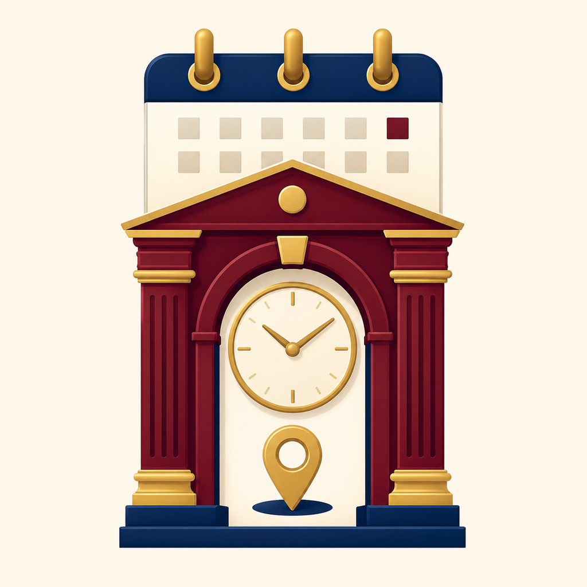

Min loge
Välj din hemmaloge i Inställningar och se dess närmast kommande möten direkt på huvudsidan.
Möten och logeinformation
Håll reda på hemmalogens kommande möten, hitta andra loger och läger i Sverige och öppna kontaktuppgifter, adress och vägbeskrivning direkt från appen.

Allt samlat på ett ställe
LogeKoll presenterar aktuella möten och praktisk logeinformation i ett tydligt iPhone-gränssnitt.
Välj din hemmaloge i Inställningar och se dess närmast kommande möten direkt på huvudsidan.
Välj Sverige, därefter län och ort. Redan när länet väljs visas de loger och läger som finns där.
Använd aktuell position för att sortera loger efter avstånd. Tydliga markeringar visar möten idag och under innevarande vecka.
Se datum, tid, mötesrubrik och annan tillgänglig mötesinformation för den valda institutionen.
Ring efter bekräftelse, skapa ett nytt e-postmeddelande eller öppna besöksadressen i Apple Kartor.
Appen hämtar en uppdaterad databas från en fast webbadress och använder en lokal kopia när nätverket inte är tillgängligt.
Tre enkla steg
Öppna Inställningar och välj den loge eller det läger som du tillhör.
Följ hemmalogens möten eller sök via län, ort eller din aktuella position.
Tryck på en loge för att se möten, adress och kontaktvägar på samma sida.
Sökresultaten begränsas alltid till samma målgrupp som den valda hemmalogen. Brödraloger och brödraläger visas för män; Rebeckaloger och Rebeckaläger visas för kvinnor.
Informationen hämtas från offentliga källor och kan ändras. Bekräfta vid behov tid och plats med den berörda logen före resan.